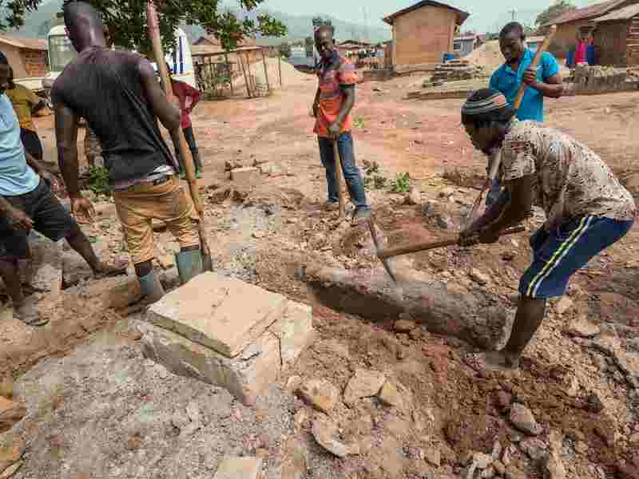
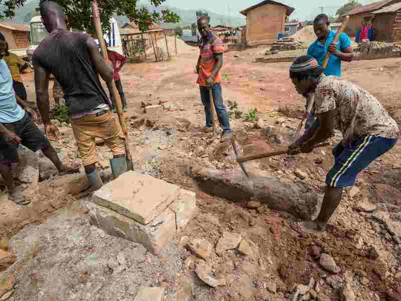

Water Project
Amanfrom is a rural village of 2,000 subsistence farmers in the eastern region of Ghana. When we began working with them in 2015, they lacked clean year-round water sources. We have since collaborated with the community to substantially increase clean and safe water supply to the region by constructing wells in key locations. Our goal is to assist the community in becoming self-sufficient through the development of a sustainable water distribution system.
Our summer 2022 projects will prioritize extending spigot pipelines to the northern part of Amanfrom and repairing two existing boreholes to expand water access in Amanfrom.
In 2014, the village of Amanfrom contacted us asking for a water distribution system similar to our past project in Obodan. Amanfrom relied exclusively on seasonal surface water and shallow groundwater from streams, springs, and hand-dug wells – all of which failed to meet WHO standards. To address this issue, we drilled and constructed two new wells within the community during our first implementation trip in August 2016. These two new reliable sources of water have greatly increased the water capacity of the community. The local government has begun collecting small fees for water, which enables them to save funds for maintenance, repairs, and future development projects. By 2018, we have implemented a total of four boreholes – three of which provide potable water - and two spigots. The Hilltop Borehole in the north of the community had the potential to provide high water yield, but was permanently closed when it was discovered to contain levels of iron and manganese that exceed WHO standards.
In January 2020, our travel team conducted water quality tests which showed improved results for the JHS borehole and JHS spigot, and slightly above-standard values for turbidity, iron, and manganese in the Primary School borehole. This data allowed the team to move forward with installation of hand pumps on the southern boreholes. Installation was successful at Primary School, but due to a regional shortage of supply of Ghana Modified India MK II hand pumps, the Borzay hand pump was not installed and is currently still missing. In conjunction with the Ghanaian government’s Community Water and Sanitation Agency (CWSA), we successfully formed a new Amanfrom Water and Sanitation (WATSAN) Committee that was approved by the village to oversee the day-to-day operations and maintenance of the water infrastructure system. We continue to share engineering and administrative resources with the WATSAN Committee and there are good indications that the committee will provide stability for the continuation of the project in the future.
In response to surveys indicating a continuous reliance on streams and hand-dug wells, we constructed a "proof of concept" biosand filter that can treat bacteriological contamination from these sources to further expand clean water access. While the community decided to reject the final project proposal, we have published our research and development report on Volunteer Village to guide other EWB Chapters with similar water treatment issues.
Our 2022 project goals incorporate Engineers Without Borders’ mission to “implement appropriate solutions that communities are equipped to maintain”. Before transferring complete ownership of the water infrastructure to Amanfrom by December 2022, we aim to establish the current water infrastructure to its fullest potential. Remote feedback from the community shows that the hand pumps at Primary School are too stiff for children to use and there is still a need for easier water access in the north of the community with the Hilltop Borehole closed. Based on this information, our Water Team is currently developing spigot extensions paths from the JHS Borehole. They are working closely with our professional mentors to develop a feasible pipe pathway given the uphill terrain north of the community. We will also facilitate reinstallation of the hand pump system at Primary School and add the much awaited hand pump at Borzay. By summer 2022, the WATSAN committee will receive additional water infrastructure maintenance training through the CWSA and gain further skills to manage the infrastructure on their own. We are hoping to have a successful remote implementation trip this summer and are currently organizing several fundraising campaigns to finance our expenses.
 
